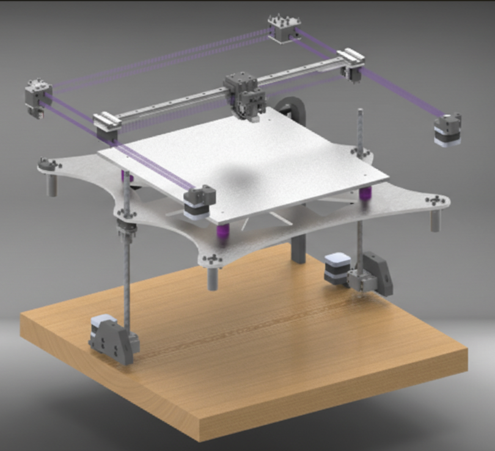
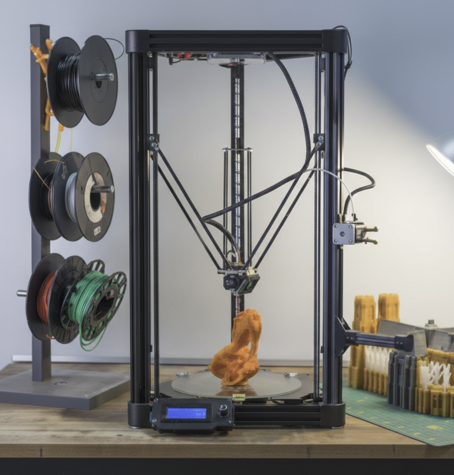
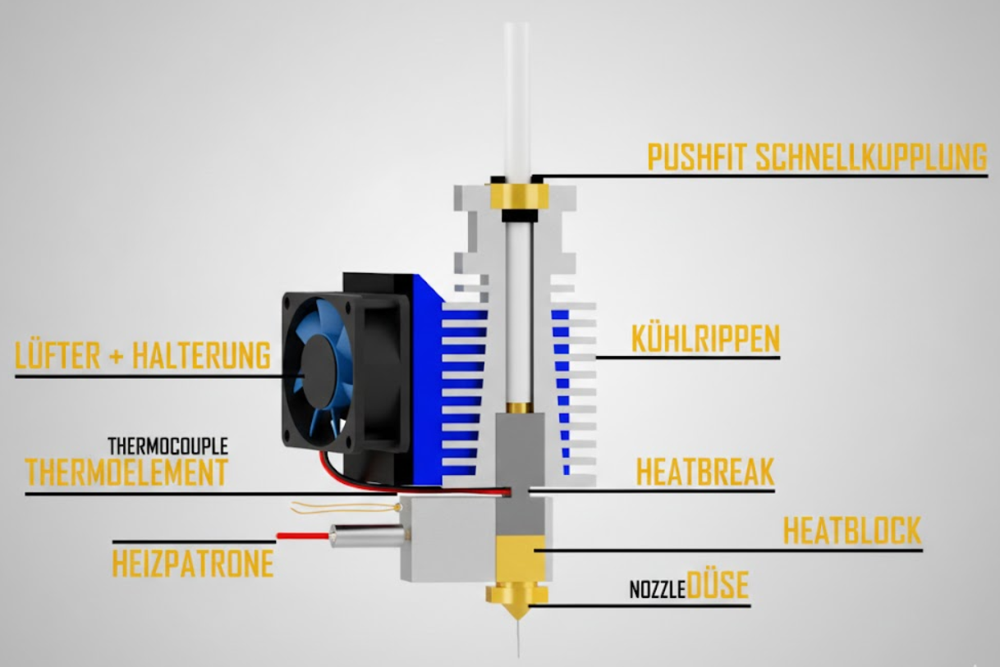
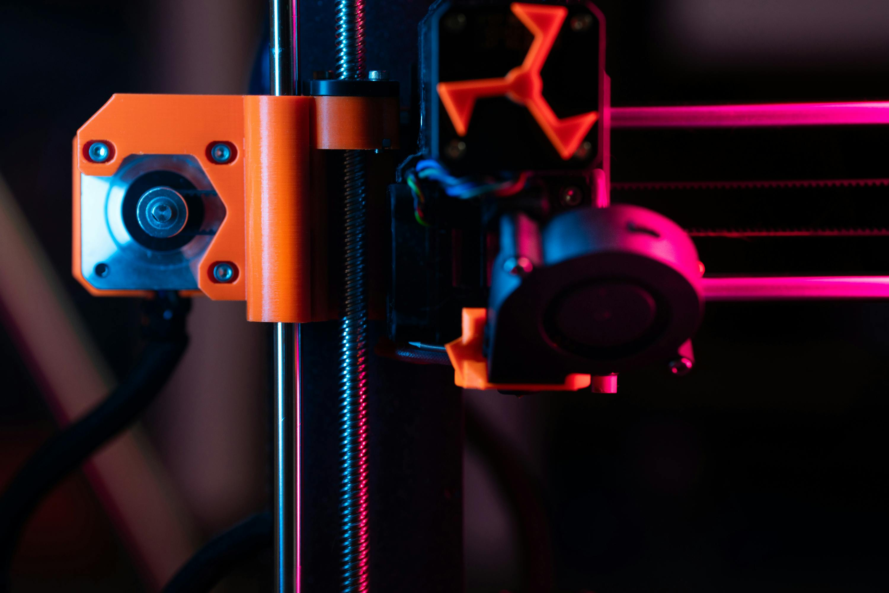

Klassischer-Drucker

Der klassische 3D-Drucker bewegt den Druckkopf auf zwei Achsen, während das Druckbett auf der dritten Achse bewegt wird, um Schicht für Schicht aufzubauen.
Funktionsweise:
- Der Druckkopf bewegt sich horizontal (X-Achse) und vertikal (Z-Achse).
- Das Druckbett bewegt sich nach Vorne und Hinten (Y-Achse), sodass neue Layer korrekt aufgetragen werden.
- Linearschienen oder Stahlstangen sorgen für präzise und stabile Bewegungen.
Vorteile:
- Einfaches Design, leicht zu warten
- Hohe Zuverlässigkeit
- Kostengünstig
Nachteile:
- Moderate Druckgeschwindigkeit
- Höhere bewegte Masse auf dem Druckkopf kann zu Vibrationen führen
- Der Ducker muss das Druckbett schwere Druckbett schnell bewegen. Dies ist das Hauptproblem warum diese Drucker-Art nur so langsam arbeiten kann.
Typische Anwendung:
Ideal für Einsteiger und präzise Drucke im mittleren Geschwindigkeitsbereich.
CoreXY-Drucker
Bei CoreXY-Druckern bewegt sich der Extruder über ein gekreuztes Riemensystem horizontal in X- und Y-Richtung. Das Druckbett bewegt sich nur vertikal auf der Z-Achse.
Funktionsweise:
- Die X- und Y-Bewegungen werden über zwei bis vier Motoren und gekreuzte Riemen gesteuert.
- Das Druckbett bewegt sich vertikal auf der Z-Achse für neue Layer.
- Die Konstruktion ermöglicht hohe Beschleunigung bei geringem Gewicht des bewegten Extruders.
Vorteile:
- Sehr schnelle Druckgeschwindigkeiten
- Hohe Präzision bei komplexen Geometrien
- Stabile Druckergebnisse bei großen Bauteilen
- Bei einer Druckorientierung von 45° werden nur ein oder zwei Motoren voll ausgelastet
Nachteile:
- Komplexere Mechanik, aufwendiger in Wartung
- Riemenspannung kritisch für Präzision
- Zu den kann es passieren, dass die Riemen-Strucktur in den Wänden sichtbar werden.
Typische Anwendung:
Geeignet für semi-professionelle Anwender, schnelle Prototypen und präzise technische Teile bei extremer Geschwindigkeit.
Delta-Drucker
Delta-Drucker besitzen drei senkrechte Säulen, an denen Arme befestigt sind, die den Extruder über Kugelgelenke bewegen. Das Druckbett bleibt stationär.
Funktionsweise:
- Drei parallele Säulen steuern den Extruder durch diagonale Arme.
- Bewegung erfolgt über gleichzeitige Anpassung aller drei Arme.
- Druckbett bleibt fix, nur der Extruder bewegt sich frei im Raum.
Vorteile:
- Sehr hohe Druckgeschwindigkeit
- Extreme Beschleunigungsraten möglich
- Hohe Druckhöhe möglich
- Elegantes, platzsparendes Design
Nachteile:
- Komplexe Kalibrierung
- Etwas schwieriger zu warten
- Geringere Präzision bei sehr kleinen Details
Typische Anwendung:
Ideal für schnelle, hohe Drucke oder spezielle Formen wie Figuren, Lampen oder architektonische Modelle.
Extruder & Hotend
Der Extruder zieht das Filament ein und das Hotend erhitzt es auf die gewünschte Drucktemperatur, um es präzise abzulagern.
- Ein Direktantrieb-Extruder sitzt direkt am Hotend und drückt das Filament unmittelbar in die Düse, was präzises Drucken von flexiblen Filamenten erleichtert, während ein Bowden-Extruder das Filament über ein langes Rohr (Bowden-Tube) zum Hotend führt, was die bewegte Masse am Druckkopf reduziert und höhere Druckgeschwindigkeiten ermöglicht, zudem bei flexiblen Materialien schwieriger zu kontrollieren ist.
- Temperaturen: 200-400°C je nach Material
- Düsen: Standard 0,2 - 0,8 mm, austauschbar. Wichtig ist zubeachten ist, dass jede Marke gern ihre eigenen Düsen verwenden!
Druckbett & Bauplattform

Das Druckbett sorgt für Haftung des ersten Layers und ist beheizt meist bis 120°C.
- Beheizt: PLA, ABS, PETG, Nylon, PP
- Materialien: Glas, Aluminium mit einer Federstahlblatte, welcher Glatt oder Gekörnt sein kann.
- Kalibrierung: Manuell oder automatisch
Antriebe & Motoren
Schrittmotoren bewegen die Achsen präzise und sorgen für korrekte Positionierung des Extruders.
- Schrittmotoren für X-, Y-, Z-Achsen
- Riemen- oder Gewindetrieb
- Linearführungen für hohe Präzision
Elektronik & Steuerung

Steuerplatine, Netzteil und Sensoren koordinieren Druckbewegungen, Temperaturregelung und Sicherheit.
- Das Kontrollboard ist das Gehirn des 3D-Druckers: Es steuert Motoren, Heizungen, Sensoren und Lüfter, verarbeitet die G-Code-Befehle und sorgt dafür, dass jede Bewegung und Temperatur exakt zum richtigen Zeitpunkt ausgeführt wird
- Firmware: Meist Klipper
- Sensoren: Endstops, Filamentsensoren, Temperatursensoren
Kühlung
Kühlung ist entscheidend für die Druckqualität. Hotend- und Bauteilkühlung verhindern Verformungen.
- Hotend-Lüfter: Kühlung der Düse
- Bauteilkühler: Fächerlüfter für Layer-Festigkeit
- Gehäuselüfter: Temperaturkontrolle bei technischen Filamenten
- Wichtig zu wissen ist das die Temperatur der Bauteilkühlenden Luft nicht so entscheidend ist wie die Menge anluft mit der gekühlt wird.
Software & Schnittstellen

G-Code-Erzeugung, Slicer-Software und Bedienoberflächen ermöglichen das Drucken von 3D-Modellen.
- Slicer: PrusaSlicer, OrcaSlicer oder auch der Hauseigene Slicer des Herstellers
- Verbindung: USB, SD-Karte, WLAN
- Touchscreens & Fernsteuerung via App oder per Slicer